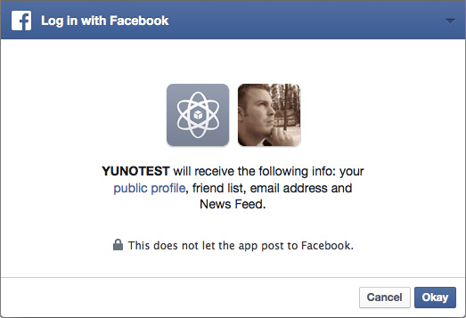

FBC:Login template tag
The FBC:Login tag allows you to display a Facebook login (and logout) button on your page. It shows the appropriate button depending on the current user's FB login state. Additionally, you can set return pages for every scenario possible when logging in/out.
{exp:fbc:login} content {/exp:fbc:login}

Parameters
The following parameters are available for use:
- login_button_label
- button_size
- show_faces
- max_rows
- width
- permissions
- return_when_logged_in
- return_when_logged_out
- return_to_register
- return_for_passive_register
- return_to_confirm_account_sync
- return_on_failure
- ignore_ee_login
login_button_label=
login_button_label="Facebook Login"
Use this parameter to change the text label of the Facebook Login button. For example, you can type in a value of Login with Facebook or Connect with Facebook. Default is Log In.
button_size=
button_size="large"
Use this parameter to change the size of the Facebook Login button. You can only choose from predetermined options from Facebook: small, medium (default), large, or xlarge.
show_faces=
show_faces="true"
This parameter allows you to specify whether to display profile photos of the users' friends below the Login button. Default is false.
max_rows=
max_rows="1"
This parameter controls the total number of rows of friends pictures to add under the Login button. Default is 1 row.
width=
width="400"
This parameter controls the width (in pixels) of the Login pop-up.
permissions=
permissions="public_profile|email|user_friends|publish_actions"
This parameter allows you to provide a list of permissions (seperate with pipe character) to request from the user while they login. Default permissions requested are: public_profile. Additionally available (without needing any manual review by Facebook) are email and user_friends. These are the main permissions you'll need as well, with the exception of publish_actions, which allows your users to publish data from your site onto their Facebook profile.
You can view the full list of permissions in the Facebook Permissions Documentation. Use the names mentioned in the User permission column.
If you intend on using/requesting any information other than public_profile, email and user_friends, you'll need to obtain permission manually from Facebook. For example, if you wish to allow users to publish content such as EE comments to the users' Facebook profile (publish_actions), you'll need to manually request permission from Facebook. You can learn more about How to Submit for Login Review (Facebook Developer Documentation) here.
return_when_logged_in=
return_when_logged_in="fbc/home"
FBC attempts to sync a users' Facebook account with the EE account to which they are logged in whenever it can. If someone is logged into an eligible EE member account and they login using the Facebook login button, their accounts will be synced and they will be redirected to this URI. If someone logs into Facebook and an EE account is found that is already synced, they are logged into that EE account and redirected to this URI.
return_when_logged_out=
return_when_logged_out="fbc/home"
This is where you specify the return path for when Facebook logout is completed by a user.
return_to_register=
return_to_register="fbc/register"
If someone attempts to Facebook login and they are not a logged-in EE user they are redirected to this page. You could use this to display a page that describes the Facebook login/registration process to the user, and then have them click another button to continue to the Register form. This parameter will be ignored if you have the Passive Registrations preference set to Yes in the FBC control panel.
return_for_passive_register=
return_for_passive_register="fbc/home"
If you have the Passive Registrations preference set to Yes in the FBC control panel, this parameter lets you control the return page once the user becomes Facebook logged in. Passive Registration means that the user will just see a Facebook prompt to allow your site to connect to their profile, and then FBC will automatically create a dummy regular ExpressionEngine member account and sync the Facebook account to it. If you have the Confirm Account Sync preference is set to Yes, it will be ignored if the user is currently not logged into EE and has not yet synced their account with Facebook. The Confirm Account Sync feature is only triggered for users that are logged into EE and have not yet synced their Facebook account.
return_to_confirm_account_sync=
return_to_confirm_account_sync="fbc/confirm_sync"
If you have the Confirm Account Sync preference set to Yes in the FBC control panel, this parameter lets you control the return page when a user attempts to Facebook login, and is already logged into ExpressionEngine. If the user is currently not logged into EE and has not yet synced their account with Facebook, and the Passive Registrations preference set to Yes, this Confirm Account Sync preference/parameter will be ignored, and the user will have an account passively created for them without any confirmation.
return_on_failure=
return_on_failure="fbc/fail"
When all of the login/register possibilities available in the FB login routine are exhausted and failed, the logging in user is redirected to this URI.
ignore_ee_login=
ignore_ee_login="yes"
This parameter ignores a check on whether or not a user visiting your site is logged into your EE site. This is useful if you want to ONLY check if the user visiting your site is logged into Facebook.
Variables
The following variables are available for use:
fbc_login_button
{fbc_login_button}
This variable parses as a Facebook Login button.
fbc_logout_button
{fbc_logout_button}
This variable parses as a Facebook Log Out button if the user is Facebook logged in, or otherwise parses as an empty string. When a user clicks the Log Out button, it will log them out of your site AND Facebook. In many cases, it might just be more courteous to the user to just have them log out of your site using the regular EE logout link method.
Conditionals
The following conditionals are available for use:
if fbc_logged_in
{if fbc_logged_in == "y"}{/if}
This conditional displays its contents if the user is logged into both Facebook and EE and both accounts are synced.
if fbc_logged_out
{if fbc_logged_out == "y"}{/if}
This conditional displays its contents if the user is currently not logged into a synced Facebook and EE account. So for example, this will conditional will evaluate to y under the following conditions:
- user is logged into just EE.
- user is logged into just Facebook.
- user is logged into both EE and Facebook, but the two accounts have not yet ever been synced.
- user is not logged into EE and Facebook.
Examples
Below is some example code on how to display a basic login/logout button for users. It will show a Facebook Login button if the user is NOT logged into Facebook and EE (not synced). If they’re logged into Facebook and EE (synced), it displays an EE Log Out link for them to log out of your site (EE) only. You could instead display a Facebook Logout button that lets them log out of both your site (EE) and Facebook, but it seems more courteous to the user to just log out of your site:
{exp:fbc:login
permissions="public_profile|email|user_friends"
return_when_logged_in="site/home"
return_when_logged_out="site/home"
return_for_passive_register="site/home"
return_on_failure="site/fail"
}
{if fbc_logged_out == "y"}
{fbc_login_button}
{/if}
{if fbc_logged_in == "y"}
<a href="{path='logout'}">Log Out</a>
{/if}
{/exp:fbc:login}